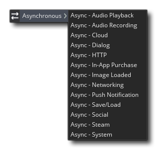

 Un événement asynchrone est un événement déclenché lorsque GameMaker Studio 2 reçoit un "rappel" provenant d'une source externe, qui peut provenir du Web ou de l'appareil exécutant votre jeu. Fondamentalement, vous GameMaker à GameMaker Studio 2 de faire quelque chose, comme de charger une image, et il commencera à le faire, mais continuera à faire tout ce qu'il devra faire en attendant de pouvoir fonctionner. Ensuite, lorsque la demande est terminée, un rappel est envoyé à GameMaker Studio 2 et tous les événements asynchrones définis pour ce type de rappel sont déclenchés. Veuillez noter que les événements asynchrones sont déclenchés pour toutes les instances qui les possèdent, un peu comme les événements clés, afin que vous puissiez effectuer un http_get appel dans une instance, mais organisez l'événement HTTP asynchrone dans une autre pour traiter l'appel.
Il existe différents types d'événements associés à la catégorie d'événements asynchrones. Ils sont tous expliqués dans les sections ci-dessous:
Cet événement ne peut être déclenché que par les fonctions de lecture de la file d’audio et renverra un message. ds_map stocké dans la variable async_load, contenant différentes paires clé / valeur relatives à la file d'attente audio qui a déclenché l'événement. L'événement est déclenché lorsque vous avez sélectionné une file d'attente audio à lire et qu'un tampon de cette file d'attente a été lu.
Les clés suivantes seront disponibles dans ds_map:Puisqu'une file d'attente audio peut être créée à partir de plusieurs tampons, cet événement peut être déclenché plusieurs fois pour une file d'attente lorsque la fin de chaque section de l'audio en mémoire tampon est atteinte, d'où la clé "buffer_id".
- " queue_id " - index de la file d'attente qui a été fini, tel que retourné par la fonction audio_create_play_queue.
- " buffer_id " - l'identifiant de tampon pour le tampon qui n'est plus lu depuis
- " queue_shutdown " - défini à 0 lors de la lecture normale et à 1 lors de la réception de l'événement car audio_free_play_queue a été appelé. Lorsque ce paramètre est défini sur 1, vous ne souhaitez plus mettre les données en file d'attente.
NOTE: la variable async_load n'est valide que dans les événements asynchrones, comme ds_map c’est-à-dire que les points à sont créés au début de l’événement, puis supprimés à la fin, cette variable étant réinitialisée à la valeur -1. Cependant, toutes les autres structures de données créées à partir de l'événement doivent être nettoyées à l'aide des fonctions appropriées.
Dans l'exemple d'utilisation donné ci-dessous, nous allons créer une file d'attente audio avec 10 sons audio mis en tampon, puis lire la file d'attente:audio_queue = audio_create_play_queue(buffer_s16, 11052, audio_mono);
for (var i = 0; i < 10; i++;)
{
audio_queue_sound(audio_queue, audio_buffer[i], 0, buffer_get_size(audio_buffer[i]));
}
audio_play_sound(audio_queue, 0, true);
Chaque étape du jeu maintenant que l’enregistrement est détecté déclenchera un événement d’enregistrement audio asynchrone dans lequel vous pourrez traiter l’entrée enregistrée de la manière suivante:var queue = async_load[? "queue_id"];
var num = 0;
if queue = audio_queue
{
for (var i = 0; i < 10; i++;)
{
if async_load[? "buffer_id"] == audio_buffer[i]
{
buffer_seek(audio_buffer[i], buffer_seek_start, 0);
num = i;
}
}
if num == 9
{
audio_stop_sound(audio_queue);
audio_free_play_queue(audio_queue);
}
}
Ici, nous vérifions l'ID de la file d'attente et si c'est celui que nous voulons, nous vérifions ensuite l'ID du tampon pour voir quel tampon a été lu. Nous avons également défini une variable locale sur cette valeur d’index pour une vérification ultérieure, ainsi que la mémoire tampon au début pour ce son. Une fois que notre variable locale atteint 9, indiquant que la file d'attente est terminée, nous arrêtons la lecture du son et libérons la file d'attente.
Cet événement ne peut être déclenché que par le audio_start_recording() fonction et retournera un ds_map stocké dans la variable async_load, contenant différentes paires clé / valeur en fonction du rappel de la fonction qui a déclenché l'événement.
Les clés suivantes seront disponibles dans ds_map:
- " buffer_id " - l'ID du tampon temporaire que vous pouvez utiliser pour récupérer les données audio
- " channel_index " - l'index de canal d'enregistrement tel que retourné par la fonction appelante d'où proviennent ces données
- " data_len " - la longueur des données (en octets) que vous avez reçues
NOTE: Comme mentionné au début de cette page, la variable async_load n'est valide que dans les événements asynchrones, comme ds_map c’est-à-dire que les points à sont créés au début de l’événement, puis supprimés à la fin. Toutefois, notez que le tampon temporaire dans lequel tout l'audio est stocké avec la carte sera également supprimé à la fin de l'événement. Vous devez donc le copier dans un tampon personnalisé si vous souhaitez le conserver pour une utilisation ultérieure.
Dans l'exemple d'utilisation ci-dessous, nous allons créer un tampon personnalisé pour stocker nos données audio enregistrées et configurer notre jeu pour qu'il enregistre à partir de la source d'entrée 0:channel_index = audio_start_recording(0);
audio_buffer = buffer_create(len, buffer_fast, 1);
Chaque étape du jeu maintenant que l’enregistrement est détecté déclenchera un événement d’enregistrement audio asynchrone dans lequel vous pourrez traiter l’entrée enregistrée de la manière suivante:var channel = async_load[? "channel_index"];
if channel == channel_index
{
len = async_load[? "data_len"];
buffer_copy(async_load[? "buffer_id"], 0, len, audio_buffer, 0);
}
Ici, nous vérifions simplement la clé "channel_index" pour nous assurer qu'elle correspond à la valeur renvoyée lorsque nous avons commencé à enregistrer, et le cas échéant, nous copions le contenu du tampon temporaire créé pour cet événement dans notre tampon personnalisé. Après cela, vous pouvez faire ce que vous voulez avec le tampon personnalisé - vous pouvez le jouer en utilisant les fonctions audio du tampon dédié, vous pouvez le traiter et l'envoyer sur le réseau, vous pouvez l'enregistrer sur le disque... Une fois que vous avez votre audio enregistré dans un tampon, vous pouvez faire pratiquement tout ce que vous voulez.
L’événement de nuage est celui qui est déclenché par l’appel en retour de l’un des cloud_ fonctions, comme cloud_synchronise. Il génère en réalité un ds_map qui est exclusif à cet événement et est stocké dans la variable spéciale async_load (veuillez consulter les fonctions individuelles pour obtenir des exemples de code qui expliquent l'utilisation de cet événement plus en détail). Ce ds_map a la structure suivante:La signification exacte de l'entrée de carte "statut" renvoyée est expliquée dans le tableau suivant:
- "status": Ceci contient le code de statut, où une valeur négative indique une erreur, une description de celle-ci sera contenue dans «errorString». Une valeur de 0 (ou une valeur positive) indique un succès (voir ci-dessous pour les valeurs exactes), et «resultString» contiendra les données renvoyées ou un message de succès.
- "id": l'identifiant renvoyé par la fonction appelée. Si vous déclenchez une série de cloud_ demandes, vous devez savoir à quelle réponse vous recevez la réponse et vous utiliserez donc cette valeur pour la comparer à la valeur que vous avez stockée lorsque vous avez initialement envoyé la demande pour trouver la bonne.
- "description": La description du dernier fichier téléchargé.
- "resultString": Ceci contient une chaîne qui est le blob de données renvoyé du cloud.
- "errorString": renvoie une chaîne d'erreur pour toute erreur.
Valeur de statut errorString / resultString La description -1 errorString = "Non connecté à <SERVICE>" You have not successfully logged in to the given Cloud Service 0 resultString = données récupérées New game data downloaded from the cloud (following a cloud_synchronise call) 1 resultString = "Déjà synchronisé" No new data since you last called cloud_synchronise 2 resultString = "ConflictDeferral" A conflict was encountered, but the gamer chose to ignore it 3 resultString = "GameUploadSuccess" data from cloud_string_save or cloud_file_save was successfully uploaded to the cloud -n errorString = Description de l'erreur Any other negative number means a synchronisation failure
Comme les événements ci-dessus, l'événement Dialogues n'est déclenché que s'il reçoit un appel d'une des fonctions utilisateur asynchrones spéciales, comme get_login_async() (Veuillez consulter cette fonction pour obtenir un exemple de code étendu illustrant la manière dont cet événement est utilisé). Ces événements sont ceux qui demandent un certain type d’entrée utilisateur, qui peut être un nom, des informations de connexion, un nombre ou une couleur, etc. La plupart des appareils n’aiment pas rester assis en boucle dans l’attente d’une réponse. be asynchrone et GameMaker Studio 2 continuera de s’exécuter en arrière-plan tant que ces fonctions auront un dialogue ouvert et jusqu’à ce qu’elles obtiennent l’entrée utilisateur requise pour déclencher cet événement.
Encore une fois, un ds_map est retourné avec l'id contenu dans la variable spéciale async_load. Les valeurs contenues dans cette carte dépendent de la fonction utilisée. Consultez les entrées individuelles pour chaque fonction de ce manuel pour plus de détails.
L’événement HTTP est celui qui est déclenché par le rappel depuis l’un des programmes http_ fonctions, comme http_post_string. Il génère en réalité un ds_map (parfois appelé "dictionnaire") qui est exclusif à cet événement et qui est stocké dans la variable spéciale async_load (Veuillez consulter les fonctions individuelles pour des exemples de code expliquant plus en détail l'utilisation de cet événement). Ce ds_map a la structure suivante:C'est pour quand vous utilisez le http_post_string() fonction, mais chacun des http_ Les fonctions peuvent renvoyer une carte légèrement différente. Veuillez donc vous reporter à la saisie manuelle de chaque fonction pour connaître les données précises renvoyées.
- "id": l'identifiant renvoyé par la commande. Si vous déclenchez une série de http_ demandes, vous devez savoir à quelle réponse vous recevez la réponse et vous utiliserez donc cette valeur pour la comparer à la valeur que vous avez stockée lorsque vous avez initialement envoyé la demande pour trouver la bonne.
- "status": renvoie une valeur inférieure à 0 pour une erreur, à 0 en cas de succès et à 1 si le contenu est en cours de téléchargement.
- "result": les données reçues (chaîne uniquement), ou le chemin du fichier téléchargé si vous avez utilisé http_get_file().
- "url": l' URL complète que vous avez demandée.
- "http_status": Le code d'état http brut (s'il est disponible). Cela renvoie le code d'état Web standard pour la plupart des navigateurs, par exemple: 304 pour "Non modifié" ou 204 pour "Aucun contenu", etc.
NOTE: Comme async_load crée un ds_map, ces fonctions sont particulièrement utiles lorsqu'elles sont associées au json_encode et json_decode les fonctions.
Des données supplémentaires pourraient également être fournies par cette carte si vous avez demandé le téléchargement de fichiers. Dans ce cas, le "statut" aura une valeur de 1 et le ds_map contiendra ces clés supplémentaires:Notez que l'événement ne sera pas déclenché pour chaque paquet de données reçu, mais se mettra à jour à tout moment pendant le téléchargement dans la boucle de jeu principale. Notez également qu'actuellement cette fonctionnalité n'est disponible que pour les plates- formes cible Windows classiques.
- "contentLength": Il s'agit de la taille du fichier que le serveur Web a indiqué que vous devriez recevoir (peut être -1 si le serveur ne renvoie pas ces données).
- "sizeDownloaded": taille des données déjà téléchargées.
Cet événement ne peut être déclenché que lorsque vous avez activé les achats intégrés pour votre jeu. Si cette fonctionnalité est ajoutée, l'événement sera déclenché dans les cas suivants:L’événement créera toujours un événement spécial ds_map avec un identifiant d'index stocké dans la variable intégrée iap_data. Cette carte contiendra toujours la clé " type ", qui contiendra l'une des valeurs constantes suivantes:
- L'état du magasin change.
- Un produit (ou des produits) ont été activés.
- Le produit et les achats ont été restaurés.
- Un produit a été acheté.
- Un produit a été consommé.
Constant La description iap_ev_storeload Cela est déclenché lorsqu'un changement est détecté dans le magasin de la plateforme cible. iap_ev_product Cet événement est déclenché lorsqu'un produit est activé et contiendra des informations supplémentaires sur le produit. iap_ev_restore Cet événement n'est déclenché que lorsque vous utilisez le iap_restore_all une fonction. iap_ev_purchase Lorsqu'un achat est terminé, cet événement est déclenché. iap_ev_consume Quand vous utilisez la fonction iap_consume cela déclenche cet événement.
Chacun de ces "types" d’événement possibles ajoutera des clés supplémentaires au iap_data ds_map, qui peut ensuite être analysé pour obtenir les informations d'achat ou de produit nécessaires. Le contenu exact de la iap_data Les cartes sont listées ci-dessous pour chaque événement "type".Lorsque vous activez vos achats, votre jeu essaiera de contacter le magasin cible, déclenchant ainsi cet événement. le iap_data map aura alors une clé d'addition " status", qui aura comme valeur l'une des constantes suivantes:
Constant La description iap_storeload_ok Le magasin a été contacté et la connexion est bonne. iap_storeload_failed Une erreur de connexion s'est produite ou, pour une raison quelconque, le magasin n'est pas disponible.
Tous les achats activés déclencheront ce "type" d'événement, mais une seule fois par achat. Par conséquent, si vous avez activé dix produits, attendez-vous à ce que cet événement se déclenche dix fois. Si vous avez reçu cet événement, le iap_data ds_map contiendra la clé supplémentaire " index " qui contient la chaîne d'identifiant unique du produit en cours d'activation. Vous pouvez ensuite utiliser la fonction iap_product_details avec cet ID de produit pour obtenir des informations supplémentaires.REMARQUE: Google Play ( Android ) ne peut demander les détails que pour les produits 20 à la fois, ce qui peut entraîner des temps de chargement assez longs pour les applications comportant un nombre important de produits.
Quand vous appelez la fonction iap_restore_all il déclenchera cet événement en ajoutant une clé " result " à la iap_data ds_map. Cette clé tiendra soit true ou false pour indiquer si les données d'achat ont été restaurées avec succès à partir du magasin cible.
Pour demander un achat en utilisant la fonction iap_acquire ce type d'événement sera déclenché. le iap_data ds_map aura la clé supplémentaire " index " qui contient la valeur d' ID d'achat unique pour le produit acheté. Vous pouvez ensuite utiliser la fonction iap_purchase_details avec cet ID d’achat pour obtenir de plus amples informations.REMARQUE: Si le produit acheté est un consommable, il doit être utilisé avec iap_consume avant un nouvel achat peut être fait.
Lorsque vous utilisez la fonction iap_consume ce type d'événement sera déclenché. le iap_data ds_map aura la clé supplémentaire " product " qui contient la chaîne d' identifiant de produit unique pour le produit en cours de consommation.
Cet événement est déclenché lorsque vous chargez une image dans GameMaker Studio 2, à condition que vous ayez utilisé une URL ou un chemin valide avec la fonction de chargement de fichier applicable. Par exemple, supposons que vous vouliez charger une image-objet et modifiez uniquement l'image-objet actuelle de l'occurrence lorsqu'elle sera chargée. Eh bien, vous auriez quelque chose comme ceci dans un événement create ou un événement d'alarme (par exemple):spr = sprite_add("http://www.angusgames.com/game/background1.png", 0, false, false, 0, 0);
Cela va maintenant commencer à charger l'image dans l'appareil ou le navigateur, mais cela ne bloquera pas GameMaker Studio 2 tant qu'il attend le chargement du fichier. Au lieu de cela, GameMaker Studio 2 continuera à fonctionner normalement jusqu'à ce que l'image soit chargée et que le rappel déclenche l'événement Image Loaded, où une ds_map est créé et stocké dans la variable spéciale async_load. La carte contient les informations suivantes:
- "nom de fichier": le chemin complet du fichier que vous avez demandé.
- "id": l'ID de la ressource que vous avez chargée. Ce sera la même chose que la variable à laquelle vous avez affecté la ressource.
- "status": Retourne une valeur inférieure à 0 en cas d'erreur.
Vous pouvez ensuite affecter l'image nouvellement chargée à un arrière-plan dans cet événement. Ceci est également vrai pour les sprites et les sons, avec un ds_map en cours de création pour chacune de ces ressources, comme illustré ci-dessus, et l'exemple de code suivant montre comment les informations renvoyées seraient utilisées dans cet événement:
if ds_map_find_value(async_load, "id") == spr
{
if ds_map_find_value(async_load, "status") >= 0
{
sprite_index = spr
}
}Le code ci-dessus vérifie d'abord l'identifiant du fichier ds_map créé, puis le statut du rappel. Si la valeur est supérieure ou égale à 0 (succès de la signalisation), le résultat du rappel sera utilisé pour définir l'index d'arrière-plan sur la nouvelle image chargée.
L'événement de mise en réseau est celui qui sera déclenché par le trafic réseau entrant et est lié aux fonctions de réseau. Cet événement génère un ds_map spécial exclusif à cet événement et stocké dans la variable spéciale async_load. Ce ds_map contiendra des informations différentes selon le type d'événement de réseau qui l'a généré.Les touches suivantes sont communes à toutes les fonctions réseau reçues et seront toujours présentes dans la liste. async_load carte:Les valeurs de retour possibles pour la clé "type" peuvent être l'une des trois constantes répertoriées ci-dessous:
- "type": Cela aura l'une des constantes listées ci-dessous comme valeur de retour et désignera le type d'événement de réseau.
- "id": l' identifiant de la socket (un nombre réel, tel qu'il est retourné par le serveur network_create_server ou network_create_socket ) qui reçoit l'événement. Dans la plupart des cas, l'ID de socket renvoyé est celui du socket TCP ou UDP qui a déclenché l'événement. Toutefois, si l'événement est déclenché sur un serveur et qu'il s'agit d'un événement de données (voir ci-dessous), l'identifiant de la socket est celui du client qui a envoyé le message. Les données.
- "ip": l'adresse IP du socket (sous forme de chaîne).
- "port": Le port associé à l'adresse IP (utile lorsque vous travaillez avec UDP).
Constant La description network_type_connect L'événement a été déclenché par une connexion. network_type_disconnect L'événement a été déclenché par une déconnexion. network_type_data L'événement a été déclenché par les données entrantes. network_type_non_blocking_connect L’événement a été déclenché par une connexion configurée comme non bloquante (vous pouvez utiliser la fonction network_set_config() pour ça).
Quand vous avez un événement du type network_type_connect, network_type_non_blocking_connect ou network_type_disconnect, la async_load map aura les clés supplémentaires suivantes:Il est à noter que l'événement de mise en réseau n'est pas déclenché dans les clients lorsque le serveur se déconnecte, et qu'aucun des deux network_type_* les événements seront déclenchés dans les clients lorsque le serveur auquel ils sont connectés se déconnecte, même si la connexion est basée sur TCP.
- "socket": Cette clé maintiendra l'identifiant de socket de connexion / déconnexion.
- "successed": cette clé sera 0 ou 1, 0 signifiant que la connexion a expiré et 1 que la connexion a abouti et que le socket est prêt à être utilisé.
Quand vous avez un network_type_data type event, ce qui signifie que votre réseau a reçu des données, la carte créée aura les clés suivantes:
- "buffer": Il s'agit de l'unique "buffer id" généré par l'événement. Un tampon de type "Grow", octet aligné sur 1, est créé pour contenir l'identifiant. Il doit être stocké dans une variable et utilisé pour tous les autres appels de fonction au tampon dans cet événement. Comme le async_load map, le tampon créé est automatiquement supprimé de la mémoire à la fin de cet événement. Pour plus d'informations sur les tampons, voir Référence - Tampons.
- "taille": Il s'agit de la taille (en octets) des données du tampon en cours de réception.
REMARQUE: le tampon créé n'est valide que pour ces événements et sera libéré à la fin de l'événement.
L'événement de notification push est déclenché par le rappel des notifications push sur le système d'exploitation du périphérique, soit à partir d'une source locale à l'aide de la fonction. push_local_notification, ou depuis une source distante (par exemple: votre serveur). Il génère un ds_map qui est exclusif à cet événement et est stocké dans la variable spéciale async_load (veuillez consulter les fonctions individuelles qui déclenchent des événements asynchrones pour des exemples de code expliquant plus en détail l'utilisation de cet événement). Ce ds_map a les clés suivantes:Il peut y avoir des entrées de clé supplémentaires en fonction du "type" renvoyé et de la valeur "status". Pour "status", si une erreur a été renvoyée ("0"), vous aurez également la clé suivante:
- "type": la valeur peut être "local" pour une notification locale du périphérique, "distant" pour une notification distante ou "register" pour l'enregistrement d'une notification distante.
- "status": La valeur sera "1" en cas de succès ou "0" en cas d'erreur.
Si la valeur "status" est 1 (c'est-à-dire: pas d'erreur), alors le ds_map contiendra les valeurs supplémentaires suivantes, en fonction de la valeur de la clé "type":
- "erreur": contient les détails de l'erreur reçue.
Pour mieux comprendre cela, nous avons créé un petit extrait de code ci-dessous que vous pourrez consulter. Dans cet exemple, nous allons envoyer une notification push locale en utilisant le code suivant:
- "reg_id": Si le "type" reçu était "register", cette clé contiendra l'identifiant d'enregistrement du périphérique pour les notifications à distance.
- "data": Si le "type" reçu était "local" ou "distant", alors cette clé contiendra la charge utile de chaîne que vous avez définie lors de l'appel de la fonction de notification.
var fireTime = date_inc_day(date_current_datetime(), 1);
var data = "daily_reward";
push_local_notification(fireTime, "Ahoy!", "Catch The Haggis Has A Present", data);
Cela configurera une minuterie pour "envoyer" une notification au périphérique lorsqu'un jour s'est écoulé. Lorsque le jour est écoulé, si votre jeu est en arrière-plan ou non en cours d'exécution, une notification s'affiche avec le titre et le message donnés (sur iOS, le nom du jeu est affiché et le titre est ignoré), puis un événement de notification push asynchrone sera appelé. Notez que si le jeu est au premier plan au moment de la notification, il ne sera pas affiché, mais l'événement asynchrone sera toujours déclenché. Dans le cas où vous géreriez le rappel, procédez comme suit:var type = ds_map_find_value(async_load, "type");
var status = ds_map_find_value(async_load, "status");
if status == 0
{
//error of some kind
var error = ds_map_find_value(async_load, "error");
show_debug_message("error=" + string(error));
}
else
{
if type == "register"
{
global.reg_id = ds_map_find_value(async_load, "reg_id");
}
else
{
var data = ds_map_find_value(async_load, "data");
if data == "daily_reward"
{
global.Gold += 1000;
}
}
}
Cet événement sera déclenché par certaines fonctions liées au chargement et à l’enregistrement des tampons dans les fichiers, ainsi qu’au chargement ou au déchargement de l’audio de la mémoire. L'événement lui-même contiendra le construit dans async_load Carte DS qui sera renseignée par les clés requises pour la fonction spécifique. Ceux-ci sont énumérés dans les sections ci-dessous.Quand vous utilisez les fonctions buffer_save_async() ou buffer_load_async() un événement asynchrone sera déclenché une fois le transfert de données terminé. Cet événement peuplera le async_load mapper avec les paires clé / valeur suivantesCela vous permet d'interroger la progression de la sauvegarde / chargement et d'afficher un message ou de changer de pièce, etc., une fois le processus terminé.
- "id": l'identifiant de la fonction async renvoyé par la fonction utilisée.
- "status": reviendra true si les données ont été sauvegardées / chargées correctement, et false autrement.
Lorsque vous travaillez avec des groupes audio, vous pouvez les charger et les décharger de la mémoire à l’aide des fonctions audio_group_load() et audio_group_unload(). Lorsque vous utilisez la fonction de chargement, il déclenche cet événement lorsque l'ensemble des fichiers audio définis pour le groupe a été chargé en mémoire et remplit la carte avec les paires clé / valeur suivantes:Lorsque tout l'audio a été chargé pour un groupe, cet événement se déclenche et peut ensuite être utilisé pour changer de salle, ou jouer une piste de musique, etc.
- "type": cela nous indique le type d'événement appelé et sera " audiogroup_load "pour charger l'audio.
- "group_id": renverra l'ID du groupe audio chargé (tel que défini dans l' éditeur de groupe audio ).
Cet événement ne peut être déclenché que par les différentes fonctions sociales spécifiques et renverra une ds_map stocké dans la variable async_load, contenant différentes paires clé / valeur en fonction du rappel de la fonction qui a déclenché l'événement.
Le ds_map contiendra un certain nombre de clés, la plus importante étant la clé " id ". Cela retournera une constante qui peut ensuite être vérifiée dans le code pour déterminer lequel des nombreux rappels l’événement a reçu. Une fois que vous avez analysé cette clé et comparé la valeur renvoyée aux constantes disponibles, vous pouvez continuer à extraire le reste des informations de la carte.Les pages de fonction sur Social Gaming - Réalisations et Classement dans la section Référence détaillent les fonctions et les rappels, ainsi que les constantes utilisées pour déclencher cet événement, mais il existe également certaines circonstances dans lesquelles il sera déclenché sans appel de fonction du jeu est en cours d'exécution:
- lorsque votre jeu est lancé à partir du tableau de bord du système d'exploitation
- quand vous terminez un défi
- quand un autre joueur termine un défi
- lorsque le jeu est lancé à partir du tableau de bord du système d'exploitation en sélectionnant un défi
L’un des rappels ci-dessus déclenchera l’ événement social et une async_load La carte sera générée avec les détails suivants (notez qu'il existe une valeur de clé "id" différente pour définir chacune des différentes raisons pour lesquelles l'événement a été appelé, mais tous les autres contenus de la carte sont identiques):
Vous trouverez ci-dessous un petit extrait de code à titre d'exemple:
- " id " - La valeur de cette clé dépend du type de rappel déclenchant l'événement. ce peut être une de ces constantes:
- achievement_challenge_received - Un défi a été reçu
- achievement_challenge_completed - Un défi a été complété.
- achievement_challenge_completed_by_remote - Un défi a été complété par l'autre joueur.
- achievement_challenge_launched - Le jeu a été lancé à partir du tableau de bord du système d'exploitation avec le défi donné.
- " playerid " - L'identifiant du joueur pour le défi.
- " issuerid " - Identifiant de la personne qui a lancé le défi.
- " state " - Etat du défi, dont la valeur est 0 - 3 (sous forme de chaîne) pour invalide, en attente, complété ou refusé.
- " message " - Le message texte pour contester.
- " IssueDate " - La date d'émission du défi
- " completeddate " - La date d'achèvement du défi.
- " type " - Le type de défi donné. Peut être l'une des deux constantes suivantes:
- achievement_type_score_challenge - Un défi basé sur la valeur du score.
- achievement_type_achievement_challenge - Un défi basé sur une réalisation.
- " identificateur " - La chaîne d'identification du défi.
- " score " - Le score à égalité avec le défi.
var ident = ds_map_find_value(async_load, "id" );
if ident == achievement_challenge_completed;
{
player_id = ds_map_find_value(async_load, "playerid");
issuer_id = ds_map_find_value(async_load, "issuerid");
state = ds_map_find_value(async_load, "state");
date_completed = ds_map_find_value(async_load, "completeddate");
date_issued = ds_map_find_value(async_load, "issueddate");
ach_type = ds_map_find_value(async_load, "type");
ach_ident = ds_map_find_value(async_load, "identifier");
ach_score = ds_map_find_value(async_load, "score");
}
Certaines fonctions de Facebook vont déclencher un événement social asynchrone et créer un ds_map avec des informations spécifiques. Les informations renvoyées dépendent du "type" d’événement appelé. Vous pouvez vérifier cela en lisant la clé "type" dans ds_map, qui sera la chaîne suivante pour un événement Facebook:
- " facebook_permission_request "
Lorsque l'événement est déclenché et est de ce type, il y aura également des clés supplémentaires pouvant être vérifiées:
- " requestId " - La valeur de l'ID de la demande renvoyée par le facebook_request_xxx_permission() fonction qui a déclenché l'événement
- " result " - Ce sera l'une des chaînes suivantes:
- " accordé " - la ou les autorisations ont été acceptées par l'utilisateur
- " refusé " - une ou plusieurs autorisations n'ont pas été acceptées par l'utilisateur
- " erreur " - une erreur est survenue
- « erreur » - Il contiendra une description de l'erreur, mais il est présent que lorsque « résultat » = « erreur ».
Cet événement ne peut être déclenché que par les fonctions de l’ API Steam et renverra une ds_map stocké dans la variable async_load, contenant différentes paires clé / valeur en fonction du rappel de la fonction qui a déclenché l'événement. La carte contiendra toujours la clé " type_événement ", qui peut ensuite être analysée pour rechercher le type de fonction qui a déclenché l'événement et modifier le code requis.
Lorsqu’il appelle une fonction qui déclenche cet événement, il génère une valeur unique d’identifiant asynchrone qui doit être stockée dans une variable et cochée, en tant que async_load La carte contiendra toujours une clé d'identification que vous pourrez ensuite analyser et vérifier que vous répondez au bon événement. En fait, la carte contiendra toujours les clés suivantes, quelle que soit la fonction Steam utilisée pour générer la réponse asynchrone:
- " id " - l'ID asynchrone renvoyé par la fonction qui a déclenché l'événement
- " result " - Le résultat de l'opération (une valeur réelle). Ce sera soit la constante GML ugc_result_success ou un autre nombre réel. Vous devez donc vérifier cette constante pour vous assurer que l'appel a abouti et si, dans le cas contraire, quelque chose n'a pas fonctionné correctement. Le reste des valeurs possibles renvoyées est affiché comme résultat de la valeur Steam "EResult" et vous devriez voir steamclientpublic.h dans les en-têtes du SDK pour les 89 valeurs possibles.
- " event_type " - Chaîne indiquant le type d'événement (voir ci-dessous pour les détails)
Lorsque vous utilisez les fonctions Steam pour télécharger un classement (soit steam_upload_score() ou steam_upload_score_buffer() ) le rendu ds_map aura les paires clé / valeur suivantes:Vous pouvez en voir des exemples sur les pages pour les fonctions de téléchargement de partition.
- " event_type " - Cette clé contiendra la valeur " leaderboard_upload "
- " post_id " - Cette clé doit correspondre à la valeur d'ID renvoyée par la fonction d'appel de téléchargement.
- " lb_name " - Cette clé contient le nom du classement sur lequel a été posté.
- " success " - Sera 1 si le message a réussi, 0 a échoué
- " updated " - Sera 1 si le score du classement a été mis à jour (c.-à-d. si le nouveau score était meilleur) ou 0 sinon
- " score " - Cette touche contient le score qui a été posté
Lorsque vous utilisez les fonctions Steam pour télécharger un classement ( steam_download_scores(), steam_download_scores_around_user() ou steam_download_friends_scores() ) le rendu ds_map aura les paires clé / valeur suivantes:Nous montrerons un exemple du fonctionnement du téléchargement des données de score en demandant le classement dans le top 10 du classement donné et en analysant ses résultats dans l’ événement Steam Async (pour télécharger des exemples, veuillez vous reporter aux pages de fonctions appropriées). Pour commencer, nous devons demander les partitions avec le code suivant:
- " event_type " - Cette clé contiendra la valeur " leaderboard_download "
- " id " - Cette clé doit correspondre à la valeur d'ID renvoyée par la fonction d'appel de téléchargement.
- " status " - Statut du rappel, où -1 est égal à un échec ou qu'aucun résultat n'a été renvoyé, et 0 correspond à un succès.
- " lb_name " - Cette clé contient le nom du classement sur lequel a été posté.
- " numEntries " - Le nombre de "lignes" de données de classement renvoyées.
- " entries " - Chaîne d'objet JSON contenant un autre fichier ds_map contenant la clé "default" (indiquant qu'aucun résultat n'est contenu dans celui-ci) ou la clé "entry", dont vous pouvez ensuite obtenir la valeur. cette valeur retournée pour "entrées" sera un ds_list contenant chacun des rangs du classement, où chaque entrée de la liste fera elle-même référence à un autre ds_map qui contiendra les clés "name", "score" et "rank", et il pourra également contenir une clé "data" en fonction de la fonction utilisée pour le téléchargement.
score_get = steam_download_scores("Game Scores", 1, 10);
Cela enverra une requête au serveur Steam pour les scores du classement "Scores de jeu", en stockant l' ID asynchrone de la demande dans la variable "score_get". Cela sera ensuite traité dans l' événement Steam Async de la manière suivante:var async_id = ds_map_find_value(async_load, "id");
if async_id == score_get
{
var entries = ds_map_find_value(async_load, "entries");
var map = json_decode(entries);
if ds_map_exists(map, "default")
{
ds_map_destroy(map);
exit;
}
else
{
var list = ds_map_find_value(map, "entries");
var len = ds_list_size(list);
var entry;
for(var i = 0; i < len; i++;)
{
entry = ds_list_find_value(list, i );
steam_name[i] = ds_map_find_value(entry, "name");
steam_score[i] = ds_map_find_value(entry, "score");
steam_rank[i] = ds_map_find_value(entry, "rank");
if (ds_map_exists(entry, "data"))
{
var data = ds_map_find_value(entry, "data");
var buffId = buffer_base64_decode(data);
var message = buffer_read(buffId, buffer_string);
show_debug_message( " -- attached message: " + string(message));
buffer_delete(buffId);
}
ds_map_destroy(entry);
}
ds_list_destroy(list)
}
ds_map_destroy(map)
}
Ce que nous faisons ici est d’abord vérifier la clé "id" de la spéciale async_load carte. Si cette valeur est identique à la valeur de la fonction de rappel d'origine (stockée dans la variable "score_get"), nous continuons alors à traiter les données. La première chose à faire est d’analyser le async_load ds_map pour la clé "entrées" qui contiendra un objet JSON contenant les données du classement. Cet objet JSON est ensuite décodé (voir json_decode ) en tant qu'autre ds_map, et ce nouvel identifiant de carte est stocké dans la variable "map".
Cette carte est vérifiée pour la clé "par défaut" et si elle est trouvée, la carte est détruite et l'événement est quitté. Si aucune clé "par défaut" n'est trouvée, le code analysera la carte pour extraire les informations nécessaires sur le classement, en extrayant d'abord une liste ds_list à partir de la clé "entrées" de la ds_map, puis en parcourant chaque entrée de la liste pour obtenez un autre fichier ds_map avec le nom, le score et le rang de chaque entrée. Ces valeurs sont ensuite stockées dans des tableaux, puis nous vérifions s’il existe une clé "data" supplémentaire. S'il y en a (c'est-à-dire que la partition a été chargée avec un paquet de données supplémentaire), nous analysons également cette information et l'envoyons à la console du compilateur à des fins de débogage, avant de détruire le tampon et de continuer ensuite pour détruire la carte. Notez que si la clé "data" est incluse, elle doit être décodée à l'aide de la buffer_base64_decode() avant de pouvoir le lire correctement.
Une fois la boucle terminée, la liste des entrées est détruite, de même que la carte à partir de laquelle elle a été prise. Il n'y a pas besoin de détruire le async_load ds_map, car cela est géré pour vous par GameMaker Studio 2.
Lorsque vous utilisez les fonctions Steam pour télécharger du contenu généré par l'utilisateur (UGC), un certain nombre d'entre elles vont déclencher cet événement. Cependant, chaque fonction générera un async_load ds_map avec des paires clé / valeur différentes (bien qu'elles contiennent toujours les clés générales " id ", " result " et " event_type "), veuillez donc consulter la page spécifique à la fonction utilisée pour obtenir des détails et des exemples.
L'événement Steam Async peut également être déclenché lorsqu'un utilisateur s'abonne à un élément en dehors du jeu. Par exemple, il quitte un navigateur et s'abonne à un nouvel élément, puis revient au jeu. Dans ces cas, le async_load La carte ne contiendra que les détails suivants (et aucune des valeurs par défaut listées en haut de cette page):L’événement Steam Async peut également être déclenché lorsqu’un élément de l’atelier est souscrit - soit depuis l’application, soit de manière externe à partir du navigateur de l’atelier - et dans ce cas le async_load map contiendra les paires clé / valeur suivantes:
- " type_événement " - Cette clé contiendra la valeur " ugc_item_installed "
- " published_file_id " - l'ID de l'élément UGC nouvellement installé (vous pouvez utiliser la fonction steam_ugc_get_item_install_info() pour obtenir le chemin d'accès à l'élément installé)
L'événement sera déclenché si un élément n'est pas abonné également, la carte DS contenant les informations suivantes:
- " type_événement " - Cette clé contiendra la valeur " ugc_item_subscribed" "
- " published_file_id ": Cette clé a l'identifiant de fichier publié du nouvel élément souscrit
- " type_événement " - Cette clé contiendra la valeur " ugc_item_unsubscribe" "
- " published_file_id ": Cette clé a l'identifiant de fichier publié de l'élément non souscrit
Cet événement ne peut être déclenché que par un événement de niveau système (tel que la détection d'un gamepad ou la connexion automatique à XBox Live) et il renverra un message. ds_map stocké dans la variable async_load, contenant différentes paires clé / valeur en fonction de l'événement de niveau système qui a déclenché le rappel.
Lorsque cet événement est déclenché pour un manette en cours de connexion ou de déconnexion, une des paires clé / valeur suivantes sera renvoyée dans la liste. async_load carte:
- " event_type " - le type d'événement système reçu, qui sera l'une des chaînes suivantes:
- " gamepad découvert " - se produit lorsque le système signale qu'un nouveau gamepad a été connecté
- " manette perdue " - se produit lorsque le système a perdu la connexion à une manette de jeu
- " pad_index " - l'index du pad ajouté ou supprimé
Cet événement vous permet maintenant de déplacer toute la logique de vérification de votre manette de jeu de l'événement Step ou d'un événement d'alarme dans l'événement système et de l'exécuter uniquement lorsqu'elle est réellement requise.
Lorsque cet événement est déclenché pour un clavier virtuel en cours d’ouverture ou de fermeture, les paires clé / valeur suivantes sont renvoyées dans la liste. async_load carte:
- " event_type " - le type d'événement système reçu, qui sera "l' état du clavier virtuel " pour les claviers virtuels.
- " screen_height " - la hauteur du clavier virtuel (en pixels). Ce sera 0 si le clavier est invisible.
- " keyboard_status " - l'état actuel du clavier, renvoyé sous l'une des chaînes suivantes:
- "cache"
- "caché"
- "montrer"
- "visible"
Voir ici pour plus d'informations sur le clavier virtuel.
L'événement système asynchrone peut être déclenché lorsque vous ciblez la XBox One à l'aide de l'exportation UWP et en cochant l'option Activer XBox Live dans les options de jeu UWP. Lorsque vous démarrez GameMaker Studio 2 projet UWP de GameMaker Studio 2 sur lequel Xbox Live est activé, le projet tente automatiquement de se connecter en mode silencieux à Xbox Live. Les résultats de cette tentative de connexion seront renvoyés sous la forme d’une des paires clé / valeur suivantes dans async_load carte:
- " event_type " - le type d'événement système reçu, qui sera l'une des chaînes suivantes:
- " utilisateur connecté " - la connexion de l'utilisateur silencieux s'est terminée avec succès
- " connexion utilisateur échouée " - la connexion de l'utilisateur silencieux a échoué (dans ce cas, vous pouvez utiliser la fonction xboxlive_show_account_picker() pour que l'utilisateur choisisse un compte avec lequel se connecter)
- " utilisateur déconnecté " - l'utilisateur s'est déconnecté
Pour plus d'informations sur les fonctions spécifiques disponibles pour XBox Live, veuillez cliquer ici.